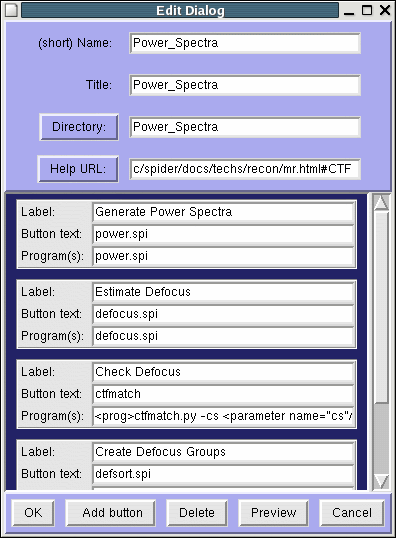
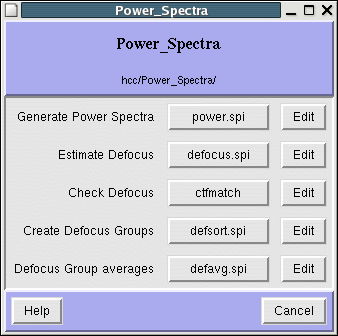

| Back: Configuration | Home: Table of Contents | Next: Running Spider Procedure files |
Configuration file
Dialogs
Directories
Many simple changes to the configuration can be made in Spire's Configuration Editor.
From the Commands menu, select Options, then choose the Configuration tab.
The Configuration window has thre sections: Configuration file,
Dialogs, and
Directories. Bear in mind the distinction between
the external XML file on the disk vs. Spire's internal
configuration. Changes made to the configuration in the program will not be saved
unless explicitly saved to the XML file. Conversely, if you make changes to the XML
file in a text editor, Spire will not reflect these changes until the configuration file is loaded.
|  | The Edit Dialog window lets you alter button labels and the programs they launch. You can also add new buttons, as well as preview your changes. Buttons are selected by clicking anywhere within the gray button frame. |
|  |